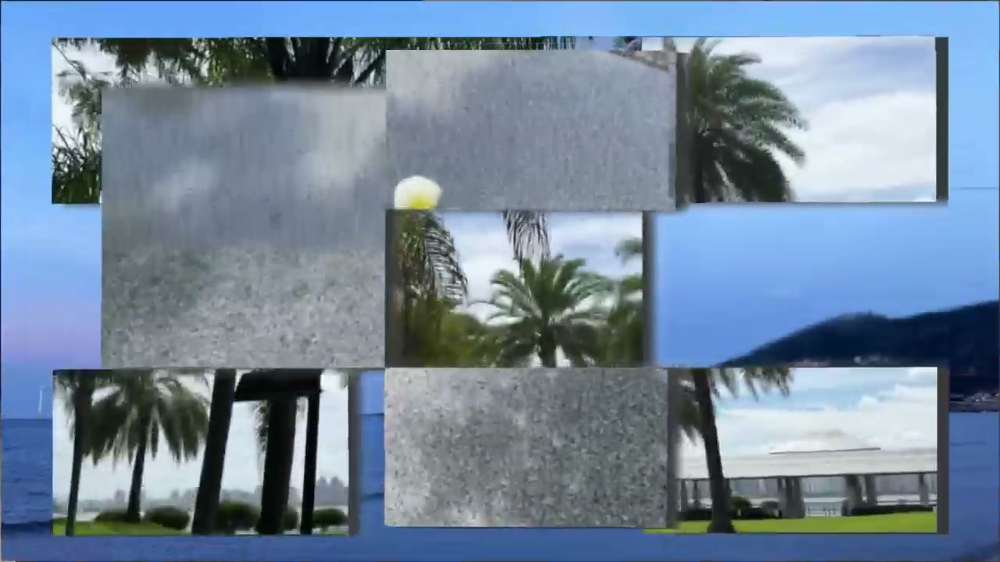
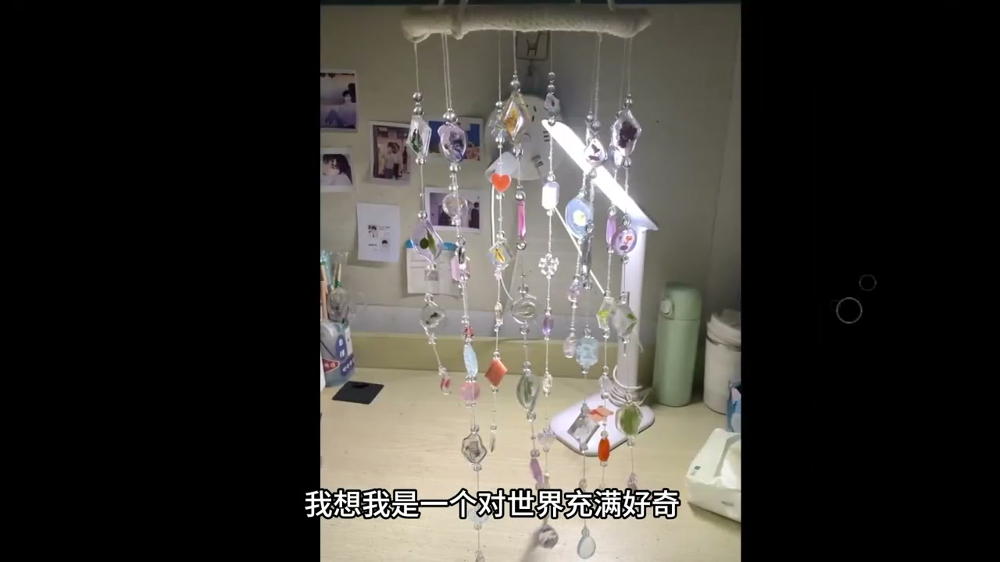
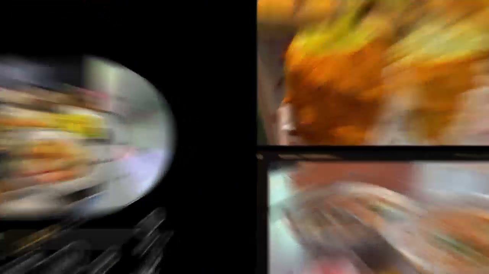
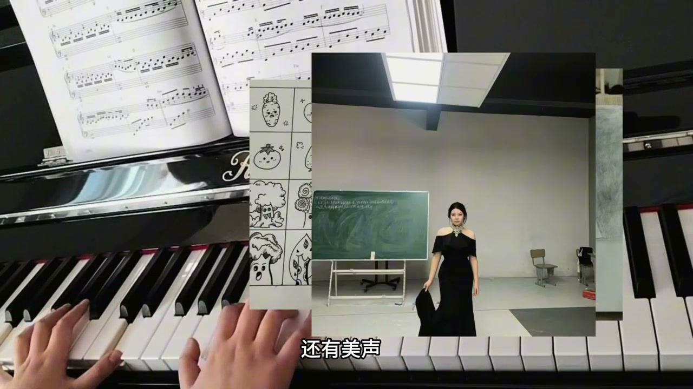
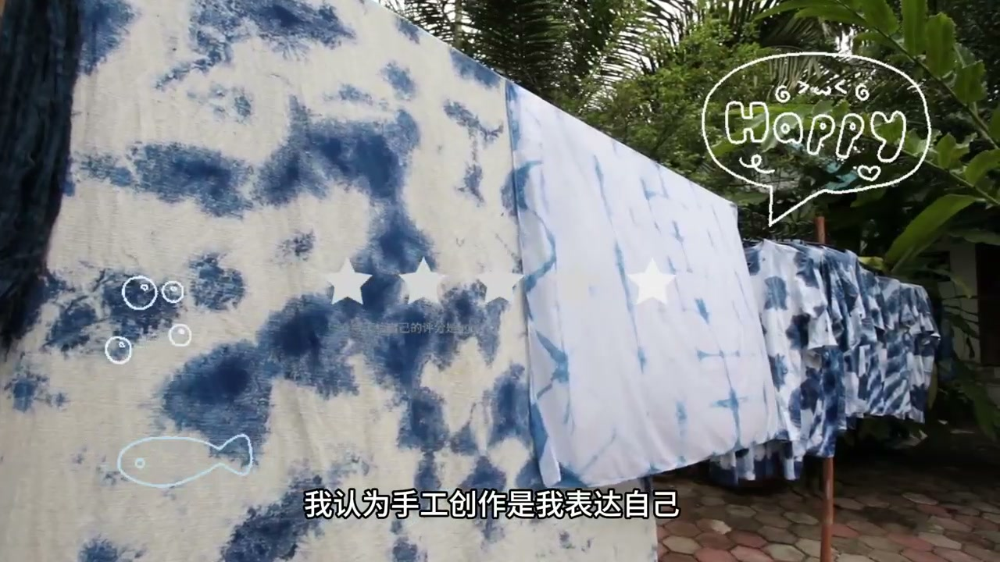

关于好奇心
01 / MANIFESTO“我想我是一个对世界充满好奇的人。”
MY LITTLE DESCRIPTION
我是唐懿，也叫一一。旅行让我看见不同的生活，美食让我认真感受当下；钢琴、绘画、拼豆和手作，则让我把细小的灵感留住。和猫咪待在一起、翻开一本书的时候，时间也会变得柔软。
把好奇心带进生活：看新的风景，尝新的味道，把灵感做成手作，也在每一个平常的瞬间里发现可爱。


“我想我是一个对世界充满好奇的人。”
我是唐懿，也叫一一。旅行让我看见不同的生活，美食让我认真感受当下；钢琴、绘画、拼豆和手作，则让我把细小的灵感留住。和猫咪待在一起、翻开一本书的时候，时间也会变得柔软。



旅行的海风、好吃的食物、弹琴时的片刻专注、散落在桌上的手作。它们不是特意摆出的履历，而是我喜欢的日常。